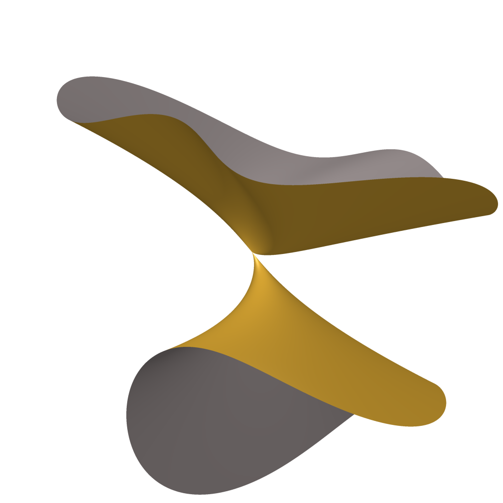
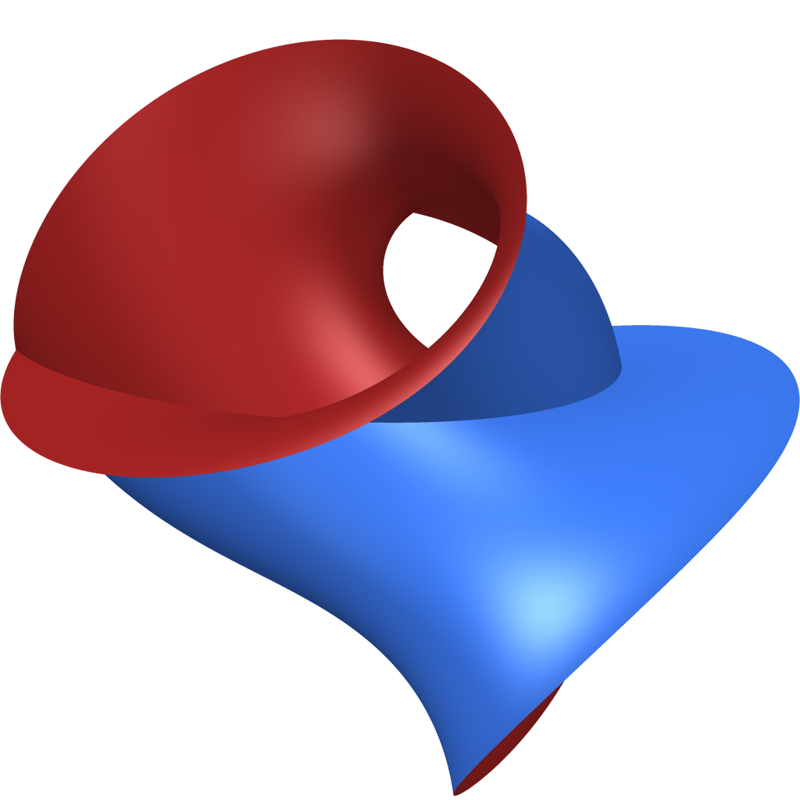
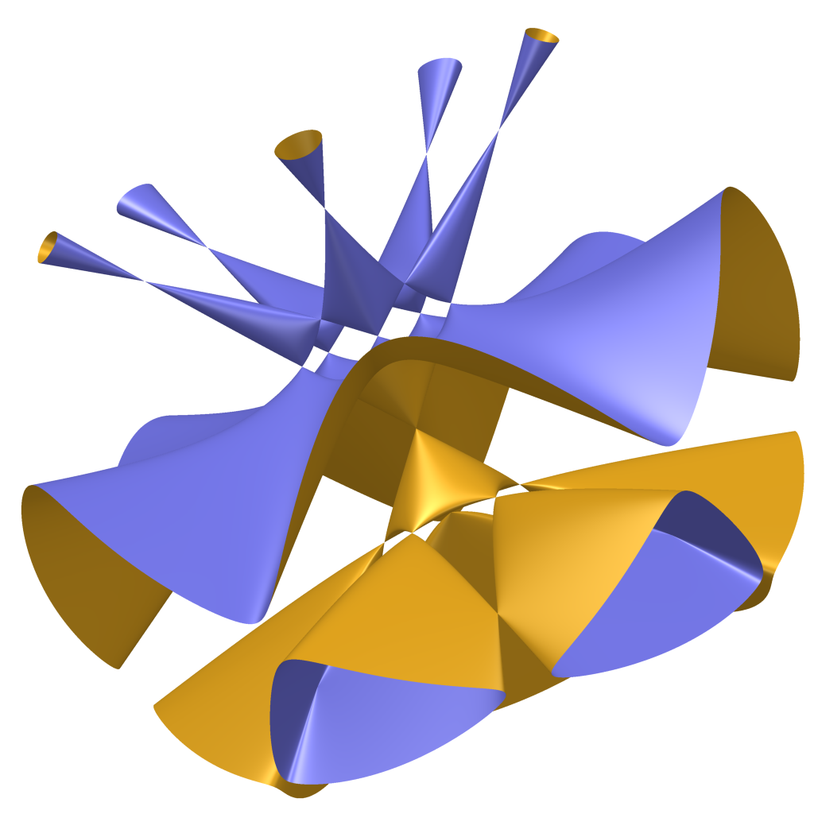
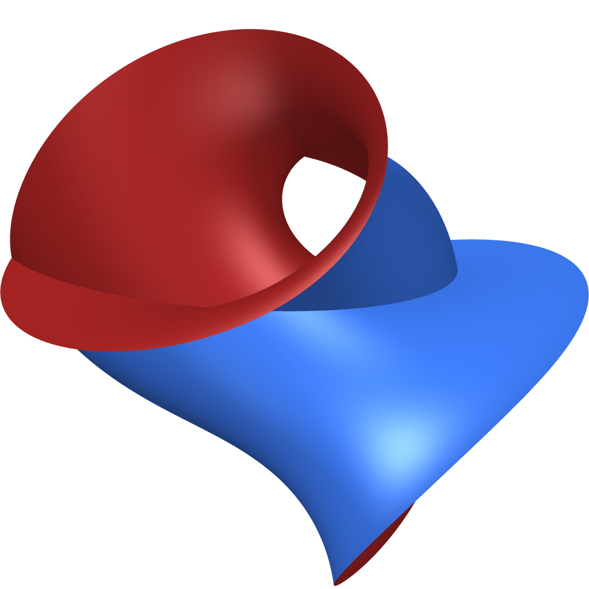
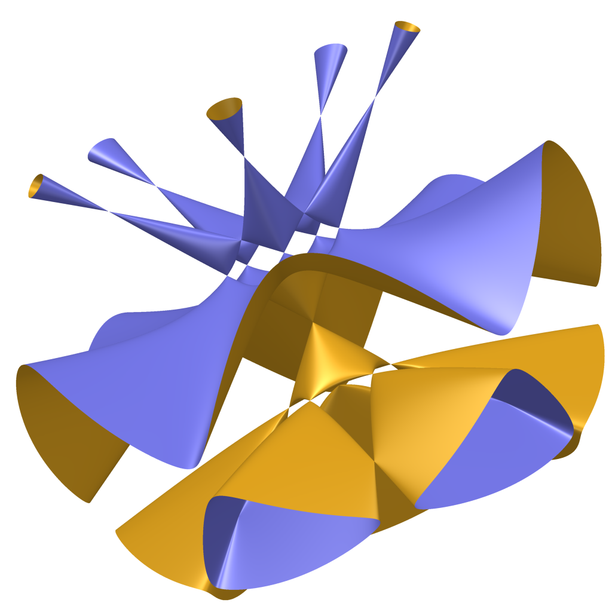

 



- Course Webpage:
-
- https://mikestillman.github.io/courses/6340-sp26/index.html
- Description:
This semester, we will study the properties of commutative Noetherian rings, especially those related to algebraic geometry. This means understanding ideals in these rings, as well as the properties of modules over such rings.
Commutative algebra is the basis and language for modern algebraic geometry. We will learn the basic relationships between algebra and geometry, and the geometric motivations for essentially all of the concepts we present.
Homological methods are extremely important in modern commutative algebra and algebraic geometry. We will develop these methods throughout the semester.
I expect you to know the material in a basic graduate algebra course (for specifics, see Prerequisites below, don't get overwhelmed by the list though!).
Commutative algebra and algebraic geometry come with a large number of interesting and important examples. We will use Macaulay2 to understand and analyze many of these examples. We will also try to present some open problems in the area.
The following is the possible plan for the semester:
1. Rings, ideals and the algebra-geometric dictionary.
2. Modules.
3. Syzygies, free resolutions and Hilbert functions.
4. Groebner bases and applications.
5. Hom, tensor products, Ext, Tor.
6. Localization of rings and modules.
7. Primary decomposition.
8. Chains of prime ideals, integral extensions..
9. DVR's and Dedekind rings
10. Dimension theory
11. Regular sequences and depth
12. Koszul complexes, Hilbert syzygy theorem
12. Cohen-Macaulay rings
13. Regular local rings
Some other topics we plan to include along the way: Graded rings, Hilbert polynomials, Noether normalization, Hilbert-Samuel polynomials, integral closure, Krull's principal ideal theorem, fibers of maps.
- Lectures:
206 Malott Hall, Monday and Wednesdays 8:40 am - 9:55 am.
- Instructor:
Mike Stillman mes15@cornell.edu.
- Prerequisites:
Basic graduate algebra, including the following topics from math 6310 (taken from the syllabus for 6310!): Integral domains, fields, quotient fields. Maximal and prime ideals; existence of maximal ideals and relation to Zorn’s Lemma. Co-maximal (relatively prime) ideals and general Chinese Remainder Theorem. Noetherian rings, ascending chain condition. PID’s, Euclidean domains, UFD’s: def and examples. Polynomial rings. Hilbert’s Basis Theorem. Gauss’s Lemma in some form (in particular, R UFD implies R[x] UFD). Free modules; structure of modules over PID. Localization (but we will do this in more depth). Hilbert’s Nullstellensatz. Prime and maximal spectrum of commutative ring. Universal properties. Tensor product of modules. Definition of a complex of modules.
- Textbook:
-
We will not follow any one textbook, but will use the three books:
Eisenbud, Commutative Algebra with a view toward Algebraic Geometry. Springer. (Should be available at Cornell library)
Atiyah-Macdonald, An introduction to commutative algebra (Might need to search for this...)
Kemper, A Course in Commutative Algebra. Springer (Should be available at Cornell library)
- Software:
We will use my Macaulay2 software to aid us in exploring commutative algebra. You may also use one of the Macaulay2Web servers: Macaulay2Web (Melbourne). or Macaulay2Web (Georgia Tech).
- Homework:
I am hoping we will have a grader. If so, there will be homeworks every 1-2 weeks. If not, then I plan on still having homework turned in, except you will give comments on each others submissions.
- Projects:
There will be a project (optional if you are auditing). This will be written, and there will be a schedule: topic chosen, references to be used, abstract, first draft, comments from others on your first draft, final draft, presentation.